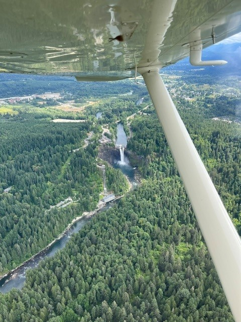

Getting to fly around the country has shown me the many Beautiful sites that the United States has to offer and has made me grateful to live in the US . From the ground, it is easy to forget the beauty that surrounds us. However, from the sky, a different perspective can generate a forgotten sense of gratitude.

The first powered plane took flight on December 17,1903, at Kill Devil Hills in North Carolina. It was flown by Orville and Wilbur Wright, and marked a day in history that would greaty change society.
Today, aviation isn't just something that gets people from place to place, but is what also allows people to see the vast beauty that the world has to offer.
Built by Jack Huarte · BMIS 235